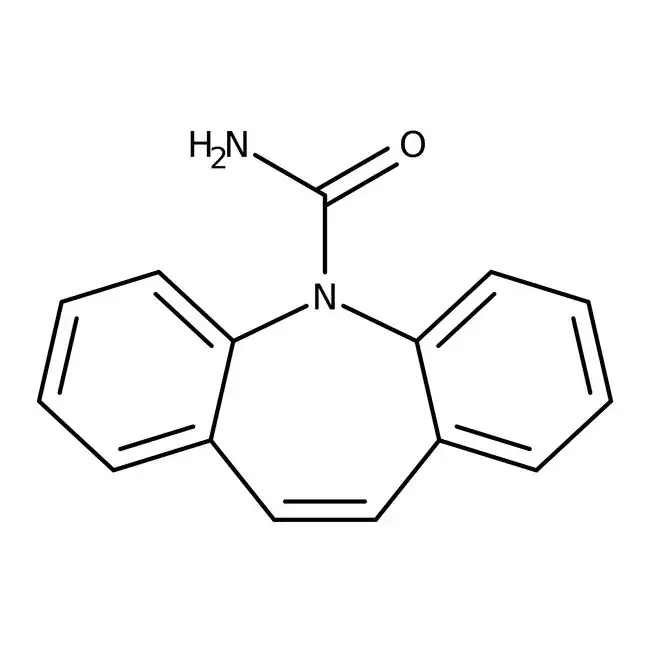
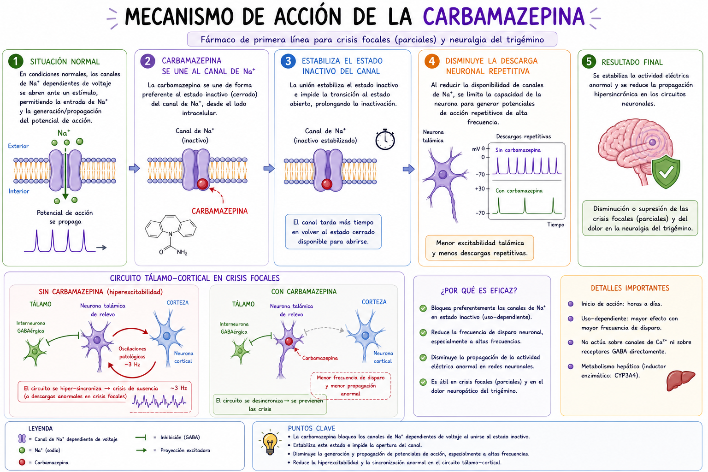

La Carbamazepina atraviesa la barrera hematoencefálica y se distribuye ampliamente en el sistema nervioso central, donde actúa principalmente sobre neuronas excitadoras que presentan actividad repetitiva de alta frecuencia.
Una vez en la membrana neuronal, la carbamazepina se une de manera preferencial a los canales de Na⁺ dependientes de voltaje en su estado inactivado, estabilizando esta conformación e impidiendo su retorno rápido al estado activable.
Durante condiciones normales, tras un potencial de acción, los canales de sodio pasan brevemente por un estado inactivado antes de volver a estar disponibles; sin embargo, la presencia del fármaco prolonga este estado, aumentando el período refractario de la neurona.
Cuando ocurre una despolarización sostenida o repetitiva, como en focos epilépticos, la carbamazepina limita la reapertura de los canales de Na⁺, reduciendo de forma significativa la corriente entrante de sodio necesaria para generar nuevos potenciales de acción.
Al disminuir esta corriente, la membrana neuronal no alcanza con facilidad el umbral de excitación, lo que impide la generación de descargas repetitivas de alta frecuencia (high-frequency firing).
Como consecuencia, se reduce la propagación de impulsos eléctricos anómalos a través de las redes neuronales, particularmente en circuitos corticales y límbicos implicados en la epilepsia y el dolor neuropático.
Además, de manera secundaria, la carbamazepina puede disminuir la liberación de neurotransmisores excitadores como el glutamato, contribuyendo aún más a la reducción de la excitabilidad sináptica.
Como resultado final, se estabiliza la membrana neuronal, se suprime la actividad eléctrica excesiva y se previene la propagación de descargas epileptiformes, sin interferir de forma significativa con la transmisión neuronal fisiológica normal.
La Carbamazepina actúa principalmente en las neuronas del sistema nervioso central bloqueando los canales de sodio dependientes de voltaje. Se une a estos canales cuando están inactivos y prolonga ese estado, lo que hace que la neurona tarde más en volver a activarse. Como resultado, se dificulta la generación repetitiva de impulsos eléctricos, especialmente en situaciones donde las neuronas están hiperexcitadas, como ocurre en las crisis epilépticas.
Al reducir la entrada de sodio, la membrana neuronal se vuelve más estable y es menos probable que alcance el umbral necesario para disparar nuevos potenciales de acción. Esto disminuye la propagación de señales anormales en el cerebro y también puede reducir la liberación de neurotransmisores excitadores como el glutamato. En conjunto, estos efectos permiten controlar la actividad eléctrica excesiva sin afectar de forma importante la función normal de las neuronas.
Audio explicativo
Material visual

